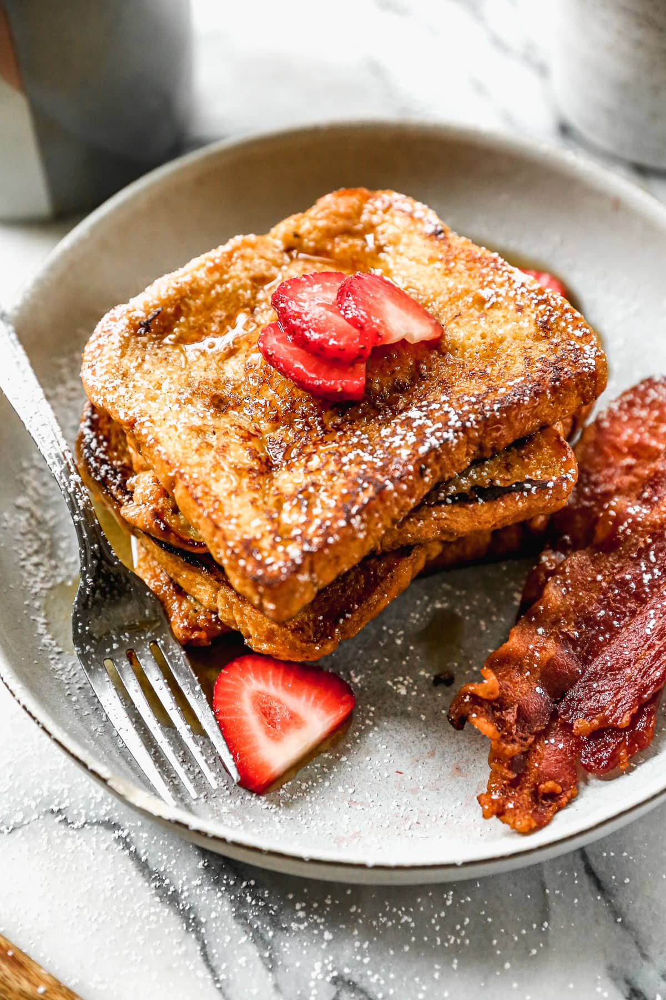

French Toast

Why?
French toast is a hearty and delicious meal perfect for a late Sunday breakfast
Recipe
Ingredients
- 4 slices of bread
- 1 banana, mashed
- 2 eggs
- 2 tbsp milk
- butter, for frying
- 1 tbsp brown sugar
- 1/2 tsp ground cinnamon
- strawberries, for serving
Method
- Combine eggs, milk and mashed banana in a flat-bottommed bowl
- Combine sugar and ground cinnamon in small bowl
- Heat frying pan with a small amount of butter
- Once hot, dip one slice of bread into mixture. Ensure you coat both sides
- Fry on a medium heat until golden brown and crispy
- Repeat until mixture is done
- Serve with cut strawberries and cinnamon sugar to taste